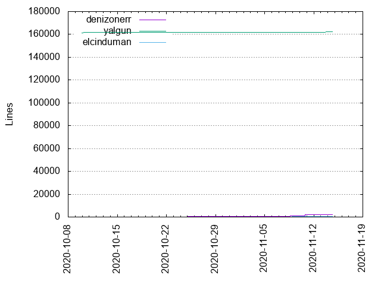
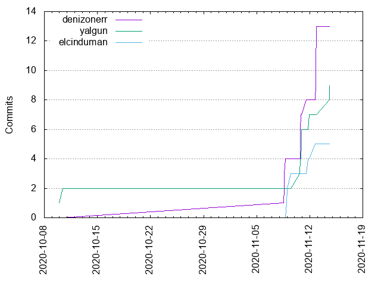

Authors
| Author | Commits (%) | + lines | - lines | First commit | Last commit | Age | Active days | # by commits |
|---|
| denizonerr | 13 (48.15%) | 2204 | 573 | 2020-11-08 | 2020-11-13 | 4 days, 6:59:48 | 5 | 1 |
| yalgun | 9 (33.33%) | 162398 | 144 | 2020-10-10 | 2020-11-14 | 35 days, 16:04:56 | 5 | 2 |
| elcinduman | 5 (18.52%) | 773 | 155 | 2020-11-09 | 2020-11-12 | 3 days, 18:03:46 | 3 | 3 |


| Month | Author | Commits (%) | Next top 5 | Number of authors |
|---|
| 2020-11 | denizonerr | 13 (52.00% of 25) | yalgun, elcinduman | 3 |
| 2020-10 | yalgun | 2 (100.00% of 2) | | 1 |
| Year | Author | Commits (%) | Next top 5 | Number of authors |
|---|
| 2020 | denizonerr | 13 (48.15% of 27) | yalgun, elcinduman | 3 |
| Domains | Total (%) |
|---|
| users.noreply.github.com | 22 (81.48%) |
|---|
| gmail.com | 5 (18.52%) |
|---|